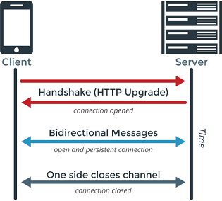
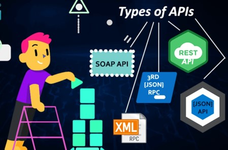
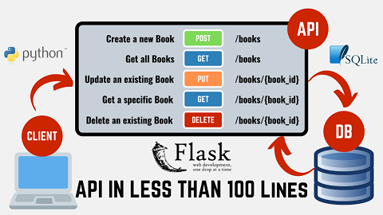
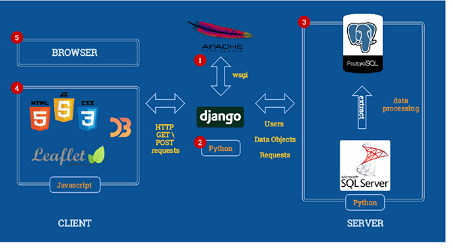
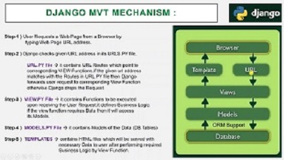
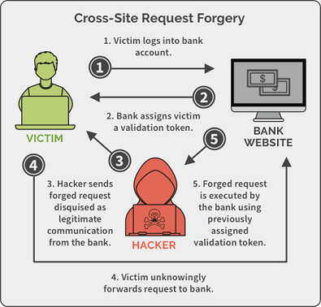
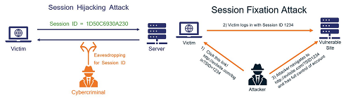
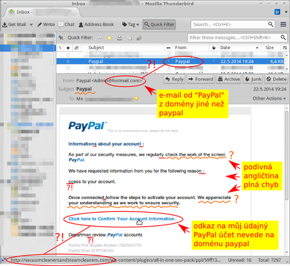
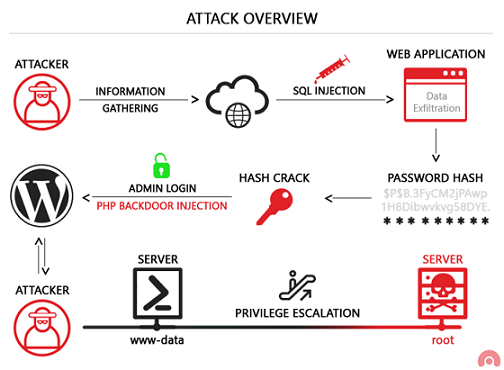
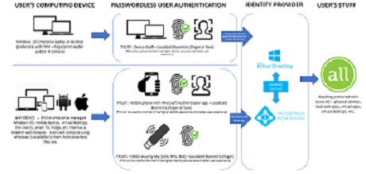

Webová aplikace je aplikace poskytovaná uživatelům z webového serveru přes internet nebo jinou vnitropodnikovou sít’ (intranet). Díky pokročilým webovým technologiím je možné realizovat webovým prostředím stále složitější a komplexnější aplikace, včetně informačních systémů, cloudových služeb apod. Současné webové aplikace jsou strukturovány do více vrstev, tradičně se uvádějí tři základní vrstvy:
Architektura webových aplikací často vychází z návrhového vzoru (design pattern), označovaného zkratkou MVC. Základní myšlenkou MVC je oddělení aplikační logiky a výstupu.Snaží se vyřešit problém spaghetti kódu, který je typický zejména pro starší PHP, kde se v jednom souboru proplétaly dlouhé části kódu, který řešil logické operace i renderování výstupu, což činilo kód těžko čitelným.
V pojetí MVC je aplikace přehledně rozdělena na komponenty tří typů:
WebSocket je nezávislý počítačový komunikační protokol, poskytující plně duplexní (obousměrný) komunikační kanál přes jediné TCP připojení.
Je navržen tak, aby mohl být prováděn ve webových prohlížečích a na webových serverech, ale může být použita jakákoliv klientská a serverová aplikace.
Jeho jediný vztah k HTTP je, že jeho handshake (navázání spojení) je interpretováno HTTP servery jako požadavek na upgrade.
Umožňuje interakci mezi prohlížečem a webovým serverem s nižší režií, usnadňuje real-time přenos dat. Využívá se pro vytváření aplikací v reálném čase, jako jsou online chaty, kooperativní služby (např. sdílená tabule, videokonference), online hry apod.
V současné době je podporován většinou hlavních prohlížečů, vyžaduje však podporu také na straně serveru.
Nejčastěji se k vývoji těchto aplikací používá javascriptová knihovna Socket.IO, kterou tvoří klientská část a serverová část určená pro Node.js. Obě tyto komponenty mají identické API.
Aplikace využívající Socket.IO jsou založeny nejčastěji na vysílání (socket.emit) a přijímání (socket.on) zpráv mezi klienty, kteří jsou prostřednictvím socketů připojeni k serveru.
K implementaci API lze přistupovat několika způsoby. Nejstarším prostředkem zůstává takzvaný Simple Object Access Protocol, zkráceně SOAP, určený pro volání procedur za využití XML. Jeho cílem je snazší sdílení informací různých aplikací, běžících v různých prostředích nebo v různých jazycích. Jedná se tedy o nástroj odstraňující bariéry mezi odlišnými platformami. Dnes je využíván převážně bankami a pojišťovnami; v ČR tento typ API využívá systém EET.
V širším měřítku je ovšem vytlačován REST API (někdy RESTfull API). REST API je, na rozdíl od SOAP, architektura fungující na principu klient-server, kdy veškerá uživatelská data zůstávají uložena na straně klienta. Díky tomu by nemělo dojít k úniku citlivých dat. Jedná se o pravděpodobně nejpoužívanější řešení určené k tvorbě aplikačních rozhraní. Ke své funkci využívá HTTP protokol.
Následníkem REST API je GRAPHQL, původně vyvíjené Facebookem, který ho také používá v rámci své sociální sítě. Časem se z něj stal open-source a může tak být bezplatně využíván širokou veřejností. GRAPHQL je jazyk dotazů, který běží na straně serveru. Umožňuje stahovat data z více zdrojů najednou, což znatelně ulehčuje práci programátorů. Nabízí větší rychlost zpracování než REST API, má bohatší škálu využití, není závislý na architektuře a lze ho implementovat i nad stávající REST API.
REST API je architektura rozhraní pro distribuované systémy. Úzce souvisí s HTTP a je datově orientovaná - určuje způsoby, jakými lze přistupovat k datům. Odděluje klientskou a serverovou část, díky čemuž je stejně jako GraphQL nezávislá na platformě a umožňuje nezávislý vývoj serveru a klienta. Klient pak při dotazech potřebuje znát tzv. endpointy (koncové body - předepsané URL požadavky), na které zasílá dotazy (případně i data).
Komunikace mezi klientem a serverem je bezestavová, server neukládá žádné informace a veškerou odpovědnost přenáší na klienta. Klient tedy musí dotaz uspořádat tak, aby byly využity všechny související koncové body, přičemž má každý zdroj svůj vlastní identifikátor, který musí být v případě nutnosti zavolán. Za účelem snížení latence (odezvy) REST API využívá cache, mezipaměť, do které ukládá dotazy při větším objemu dat, nebo před dalším použitím. Data tedy musejí být označena buď jako kešovatelná, nebo nekešovatelná. Pokud jsou kešovatelná, systém předpokládá, že se s nimi bude v budoucnu ještě pracovat a ponechá je ve zmíněné mezipaměti. Touto cestou se zlepšuje výkon na straně klienta. Na druhou stranu ovšem narůstá šance na ztrátu aktuálnosti informací.
Django je open source webový aplikační framework napsaný v Pythonu, který byl pojmenován po jazzovém kytaristovi Django Reinhardtovi. Hlavní úkol Djanga je snadné vytvoření komplexních, databází řízených webových aplikací. Zaměřuje se na znovupoužitelnost, propojitelnost komponent a rychlý vývoj v duchu „DRY“ (Don’t Repeat Yourself – "neopakuj sám sebe").
Django vychází z architektury MVC (Model-View-Controller), jež je v tomto případě modifikována do podoby MVT (Model-View-Template). Centrálním řídicím prvek aplikace je totiž systém zobrazení (View), který operace s daty řeší ve spolupráci s modelem a samotné zobrazení stránek zajišťují tzv. šablony (templates) s podporou šablonovacího systému.
Datový model je definován pomocí tříd v Pythonu a prostřednictvím objektově relačního mapování (ORM) může být fyzicky realizován v různých relační databázových systémech. K specifickým rysům Djanga patří možnost automatické tvorby administrace projektu, která je generována dynamicky podle datového modelu.
Projekt je chápán jako nejvyšší úroveň v Djangu a může být vytvořen z příkazové řádky příkazem: python django-admin.py startproject (název projektu). Součástí projektu může být jedna nebo více aplikací.
Každá aplikace musí být zaregistrována v konfiguračním souboru settings.py, který je společný všem aplikacím v Djangu. Součástí konfiguračního souboru je mimo jiné nastavení připojení k databázi a připojení k SMTP serveru pro snadné posílání emailů, konfigurace tzv. middleware (komponenty, které v aplikaci zajišťují určité speciální služby - např. autentizaci nebo zabezpečení), nastavení časového pásma, registrace aplikací do projektu nebo deklarace důležitých konstant.
Projekt i jednotlivé aplikace je možné spravovat pomocí skriptu manage.py. Mezi jeho základní úlohy patří vytvoření základní struktury nové aplikace (python manage.py startapp), vytvoření databázového schématu a provedení tzv. migrací (python manage.py makemigrations, python manage.py migrate) nebo spouštění testovacího webového serveru (python manage.py runserver).
Grafické uživatelské rozhraní (Graphical User Interface - GUI) je kombinací technologíí a prostředků, které umožnují uživateli komunikovat s počítačem a aplikací. V případě webových aplikací jde především o grafické či textové prvky a jejich rozmístění.
GUI zásadním způsobem ovlivňuje vnímání celé aplikace uživateli a z orientace na uživatele vychází způsob navrhování aplikací označovaný jako User Experience Design (UXD).
Kvalitní webová aplikace má být z pohledu jejího uživatele především funkční a použitelná, zároveň efektivní a dostatečně rychlá i při vykonávání jednotlivých dílčích úkonů a její rozhraní by mělo být dostatečně intuitivní a přizpůsobené zvykům uživatelů.
Jedním z rysů moderních GUI je oddělení obsahu od grafické interpretace. To má pozitivní vliv především při větších úpravách aplikace, ale také při vytváření GUI aplikace pro jiné platformy (např. mobilní telefony).
Responzivní (někdy adaptivní) design je způsob stylování HTML dokumentu, které zaručí, že zobrazení stránky bude optimalizováno pro všechny druhy nejrůznějších zařízení (mobily, netbooky, tablety atd.). Díky vlastnosti Media Queries (součást CSS3), lze rozpoznat vlastnosti zařízení, na kterém je stránka prohlížena, a přizpůsobit její obsah i vzhled. Responzivní web design má tři základní úrovně:
Flexibilní struktury se dosahuje pomocí procentních šířek. Jednotlivé šířky elementů tak nejsou zadávány v pixelech, nýbrž v procentech.
Media Queries jsou pravidla, díky kterým lze měnit stylování dokumentu v závislosti na šířce obrazovky zobrazovaného zařízení. @media (max-width: 780px){...} K urychlení a usnadnění práce webdesignerů byly vytvořeny některé responzivní frameworky, jakými jsou např. Bootstrap nebo Foundation. Po připojení potřebných souborů je možné aplikovat připravené styly pomocí pojmenovaných tříd.
Přístupnost webových stránek (webové aplikace) znamená bezproblémového používání všemi skupinami uživatelů, včetně handicapovaných osob.
Špatně navržené stránky či grafické rozhraní aplikace, které nerespektuje pravidla přístupnosti, může způsobit nedostupnost této služby pro lidi např. se zrakovým postižením (Blind Friendly Web), uživatele s pomalejším připojením, seniory, apod.
Celosvětově uznávanou metodikou, která se zabývá auditem a přístupností internetových stránek, je WCAG, jejímž autorem je konsorcium W3C.
Jednotlivé principy obsahují vždy několik pravidel a kritéria, rozdělená do třech úrovní: nejnižší úroveň je označována jako úroveň A, nejvyšší jako AAA.
Tvůrce webové aplikace by měl vždy zajistit, aby hodnoty zadávané do formuláře byly vždy pečlivě zkontrolovány buď ještě před jejich odesláním na straně klienta (pomocí vhodných atributů HTML nebo JavaScriptu), v každém případě však na straně serveru.
Validací formulářových dat předcházíme možným bezpečnostním rizikům, které mohou způsobit pokusy záměrně vložit podvržená data a způsobit problémy aplikaci (např. Cross site scripting, SQL injection), nebo i nechtěná chybná zadání uživatelů, která mohou mít např. neblahý vliv na data ukládaná do databáze (porušení integrity).
K validaci zadaných dat můžeme jak na straně klienta, tak i na straně serveru využít (mimo jiné) tzv. regulárních výrazů. Regulární výraz (regular expression) je speciální řetězec znaků, který představuje určitý vzor (masku) pro textové řetězce
Většina moderních programovacích jazyků používá Perl-compatible regulární výrazy, které mohou být sestaveny pomocí speciálních symbolů: \^\d{3} ?\d{2}$\ (regulární výraz pro kontrolu PSČ)
Cross-site scripting (XSS) je metoda narušení WWW stránek využitím bezpečnostních chyb ve skriptech (především neošetřené vstupy).
Útočník díky těmto chybám v zabezpečení webové aplikace dokáže do stránek podstrčit svůj vlastní javascriptový kód, což může využít buď pouze k poškození vzhledu stránky.
Často je též využíván při phishingu tak, že je skrze XSS zranitelnosti uživateli ukázán jiný obsah na jinak důvěryhodné stránce.
Obrana:
V textech zadávaných uživateli je třeba speciální znaky nahrazovat entitami, např. < nahrazovat za <, v java aplikacích nejlépe pomocí značky
Cross-site request forgery (XSRF) je pasivní útok, kdy útočník nachystá na nějakou stránku kód, který způsobí vyvolání URL na nějakém jiném serveru, kde uživatel může být stále přihlášen.
Důležité akce (třeba převod peněz) je třeba potvrzovat, do přihlašovacích formulářů je třeba přidávat náhodně generované hodnoty.
V administrační části internetových aplikací, pro akce, které mažou určité záznamy nebo je jiným způsobem mění, se doporučuje zásadně používat HTTP metodu POST.
Používat autorizační token – náhodně vygenerovaný řetězec pro danou akci a pro aktuálního uživatele.
Session hijacking je útok, při kterém útočník odposlechne cookie použité pro označení úspěšně autentizovaného uživatele, a začne se za něj vydávat.
Obrana: Session cookies musí mít označení secure, tedy mohou být poslána jen přes šifrovaná SSL spojení.
V případě předávání session ID přes URL je obrana komplikovanější, vyžaduje zabránit úniku URL přes referer (odkazy, obrázky, ...) a Session fixation.
Phishing je aktivní útok využívající sociální inženýrství, při kterém útočník vydává svoje vlastní webové stránky za oficiální stránky instituce / aplikace, aby získal přihlašovací údaje uživatele.
Obrana: Vzdělávání uživatelů v kontrole autentizace serveru, použití Extended Validation SSL Certificates.
SQL Injection je technika napadení databázové vrstvy programu vsunutím (odtud „injection“) kódu přes neošetřený vstup a vykonání vlastního pozměněného SQL dotazu.
Obrana: Důsledné používání tzv. PreparedStatement a jeho setXXX() metod pro nastavování hodnot.
Tam kde se nejedná o hodnotu (třeba název sloupce v ORDER BY), zkontrolovat vstup regulárním výrazem na očekávané hodnoty.
Ověřování bez hesla je metoda ověřování, při které se uživatel může přihlásit do počítačového systému bez zadání hesla nebo jakéhokoli jiného tajemství založeného na znalostech.
Ověřování bez hesla se spoléhá na pár kryptografických klíčů - soukromý a veřejný klíč.
Autentizace znamená ověření identity nějakého subjektu (člověka, osoby, systému).
Metody autentizace jsou založeny na prokázání identity subjektu. Existují tři základní způsoby autentizace: Autentizace dle toho, co subjekt má (například identifikační karta,identifikační dokument, platební karta, klíč) Autentizace dle toho, co subjekt zná (například PIN, heslo, přístupová fráze) Autentizace dle toho, čím subjekt je (například různé biometrické údaje, jako otisk prstu)
Každá z metod autentizace má v konkrétním užití své výhody a nevýhody, často se metody v praxi kombinují. Větší bezpečnosti lze zde dosáhnout diverzifikací zabezpečení nejen co do počtu, ale i co do různých faktorů.
Jednofaktorová autentizace. Tento typ autentizace znamená, že k ověření dojde pouze pomocí něčeho, co uživatel zná (typicky uživatelské jméno a heslo).
Vícefaktorová autentizace. V rámci tohoto typu jde o to, že k ověření dojde ještě navíc pomocí něčeho, co uživatel má (typicky osobní zařízení, jako je mobilní telefon a SMS nebo token a PIN). K prokázání identity je třeba ověření dvou na sobě nezávislých věcí. Např. zadání hesla + otisk prstu. Často se používá zadání přístupových údajů + vložení autorizačního kódu zaslaného SMS.
Přihlašovací formuláře a SESSION
Nejčastěji se ve webových aplikacích setkáváme s autentizací, která využívá HTML formuláře a session proměnné. Uživatel se přihlašuje prostřednictvím přihlašovacího formuláře, na němž vyplňuje minimálně uživatelské jméno a heslo. Po odeslání formuláře jsou zadané uživatelské údaje porovnávány s odpovídajícími daty, jež bývají uloženy zpravidla v databázi. V případě shody je uživateli povolen přístup do chráněné části aplikace. Aby nemuselo docházet k neustálému ověřování identity uživatele během práce s aplikací, jsou ověřené identifikační údaje uchovávány v session proměnných na serveru. Pro odhlášení pak stačí zrušit session proměnnou (session id); v případě automatického odhlášení se při každém požadavku porovnává aktuální čas s časem posledního přístupu v session proměnné. Aplikace by v žádném případě neměla ukládat hesla v odkryté podobě, ale využívat některou ze šifrovacích metod - nejčastěji hašovací funkci (např. md5, sha atd.). S ohledem na existenci různých slovníků s velkou zásobou shromážděných otisků pro častěji používaná hesla je bezpečnější použít na straně aplikačního serveru tzv. saltování, kdy se k zadanému řetězci přidá "sůl" v podobě přidaných znaků (tato "sůl" je pro daný server vždy stejná). Pro výpočet otisku je lepší používat pomalé hašovací funkce pro ztížení útoku hrubou silou.
HTTP autentizace
Jedná se o standardní součást protokolu HTTP, která bývá implementována na úrovni webového serveru. Její výhodou je jednoduchost, k nevýhodám patří nemožnost změny podoby přihlašovacího okna, problematické řešení odhlášení a přenášení hesel v nekódované podobě (lze však využít bezpečnější metodu Digest). HTTP autentizace předpokládá použití tzv. hlaviček (headers), které patří k protokolu HTTP. Prostřednictvím programových prostředků (např. PHP) můžeme číst hlavičky požadavku (request) zaslané prohlížečem, nebo naopak generovat hlavičky a posílat je jako součást odpovědi (response).
Klientské certifikáty.
Tato autentizační metoda využívá mechanismus SSL/TLS. SSL (Secure Socket Layer) je protokol, který mezi vrstvu transportní (TCP/IP) a vsrtvu aplikační (HTTPS) vloží další vrstvu, která poskytuje zabezpečení komunikace šifrováním a umožní autentizaci (ověření totožnosti) komunikujících stran. Přepokladem je digitální certifikát v podobě veřejného šifrovacího klíče, vydaného certifikační autoritou. Certifikátem se prokazuje nejen server, ale i uživatel, což může být pro neznalého uživatele komplikovanější. Klientské certifikáty se využívají např. v internetovém bankovnictví.
Zkratkou CMS (Content Management System = systémy pro správu obsahu) je označován software, pro který se vžil častěji používaný název redakční systém.
Jedná se zpravidla o komplexní webovou aplikaci používanou pro tvorbu a úpravu obsahu webu bez znalostí kódování.
CMS tak může ušetřit náklady na aktualizaci obsahu webu, protože změny částí stránek může provádět i zaškolená obsluha bez znalosti kódu HTML, CSS či dalších technologií.
V současnosti existuje celá řada redakčních systémů, které se vzájemně liší svými funkcemi i možnostmi použití. K předchůdcům CMS patří různá administrační rozhraní pro vkládání novinek a aktualit.
Složitější CMS umožňují vkládání různých článků a spotů (včetně tabulek a obrázků) do předem určených kategorií, případně úpravu všech textů na webu.
Používají se k tomu tzv. WYSIWYG editory, jejichž ovládání se velmi podobá ovládání běžných desktopových textových procesorů (např. MS Word), které fungují v internetových prohlížečích a v pozadí generují HTML kód.
K nejčastěji používaným patří FCKEditor a TinyMCE; v obou případech jde o javascriptové aplikace na straně klienta, jejichž prostředí lze libovolně konfigurovat a funkčnost rozšiřovat pomocí řady pluginů.
Častou funkcí CMS je i správa obrázků a celých fotogalerií, většina redakčních systémů obsahuje i moduly pro správu multimediálního obsahu, včetně audio a video souborů. Výjimkou není ani možnost spravovat diskuse a komentáře.
Vyspělé CMS dokáží přímo manipulovat se strukturou webu a s využitím různých přídavných modulů přizpůsobovat funkce redakčního systému konečnému záměru - s jejich pomocí je tak možné vytvářet weblogy, firemní stránky, elektronické obchody, zpravodajské portály atd.
Mezi populární a velmi rozšířené CMS patří Wordpress, Joomla! a Drupal. WordPress je open source redakční systém napsaný v jazyce PHP a využívající databázový systém MySQL. Původně byl vyvinut se záměrem poskytnout platformu pro co nejpohodlnější zprovoznění blogovacího systému, ale díky rozsáhlé komunitě programátorů a existenci mnoha rozšíření je dnes základem nejrůznějších webových projektů. Jednou z výhod Wordpressu je snadná instalace jádra systému, po níž může následovat instalace různých doplňků (pluginů) i šablon grafického vzhledu (témat).
Redakční systém je spravován prostřednictvím administrační části aplikace (back-end), do níž mají přístup uživatelé podle nadefinovaných oprávnění.
V administraci lze měnit nastavení systému, instalovat i přizpůsobovat pluginy i témata, aktualizací, instalace a přizpůsobení témat), definovat strukturu webu (provádět změny menu, vytvářet kategorie i tzv. štítky), editovat a publikovat příspěvky (články v podobě aktualit) nebo statické stránky, vytvářet galerie obrázků i multimédií, sledovat statistiky přístupů a provádět řadu dalších operací.
Wordpress kromě jiného podporuje využití RSS kanálů a metod Trackback i Pingback (způsoby jak informovat určitou stránku, že je na ni z jiné stránky odkazováno; bohužel rovněž časté nástroje spammerů). Nevýhodou Wordpressu, ale i jiných rozšířených CMS je množství útoků, které využívají slabých míst těchto systémů k jejich ovládnutí, poškození nebo i zneužití k jiné kybernetické kriminalitě. Při nasazení jakéhokoliv redakčního systému je proto nezbytné důsledně dodržovat všechny bezpečnostní zásady, zejména pravidelně aktualizovat jádro systému, ale i pluginy.
Pojem e-commerce je používán k označení různých obchodních transakcí realizovaných prostřednictvím Internetu a dalších elektronických prostředků. Podle cílové skupiny rozlišujeme několik typů e-commerce: B-2-B (Business to Business, obchodník obchodníkovi). Většinou fungují na principu elektronické výměny dat (objednávek, faktur). Vyšším stupněm jsou internetová tržiště pro zprostředkování obchodů. Nejvyspělejší variantou jsou komunikační a distribuční sítě, kde dochází k transakcím v reálném čase, včetně finančních a logistických operací.
B-2-C (Business to Consumer, obchodník zákazníkovi). Na základní úrovni je to webová stránka plnící funkci elektronického katalogu, doplněná případně o interaktivní formuláře s možností zpětné vazby. Nejvyšší úrovní je internetový obchod s možností online plateb.
C-2-B (Consumer to Business, zákazník obchodníkovi). Obchodní transakci iniciuje zákazník, když zadává požadavek na určitý produkt za určitou cenu. Obchodní partner sdělí, zda je ochoten požadavek akceptovat (např. poptávka na pokoj v penzionu).
C-2-C (Consumer to Consumer, zákazník zákazníkovi). Výměnný obchod mezi lidmi bez prostředníka - internetová spotřebitelská burza či elektronická aukce (např. použitého zboží, sběratelských předmětů apod.).